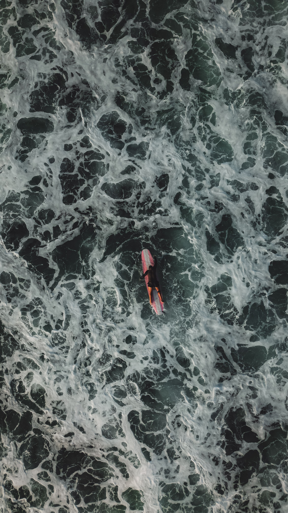
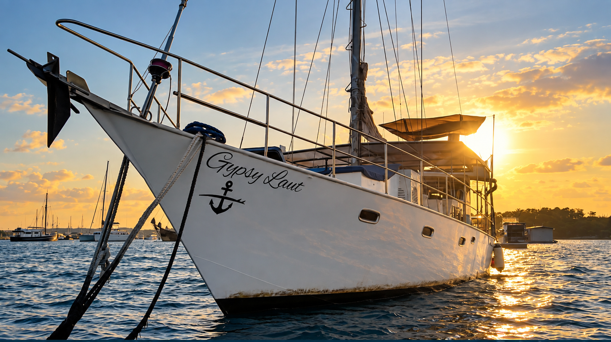
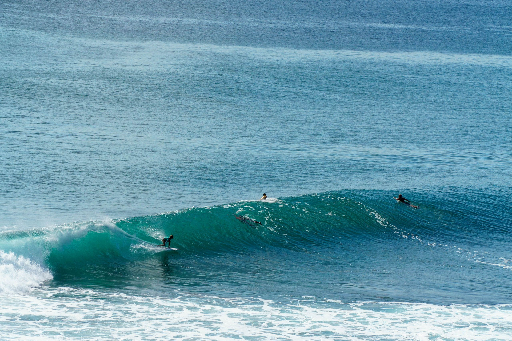
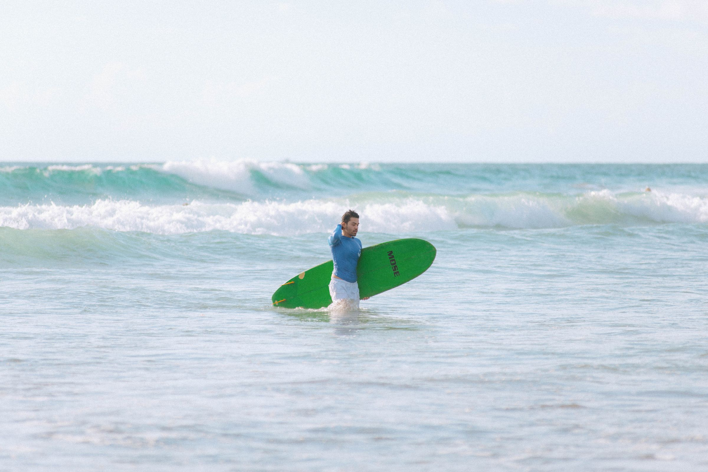
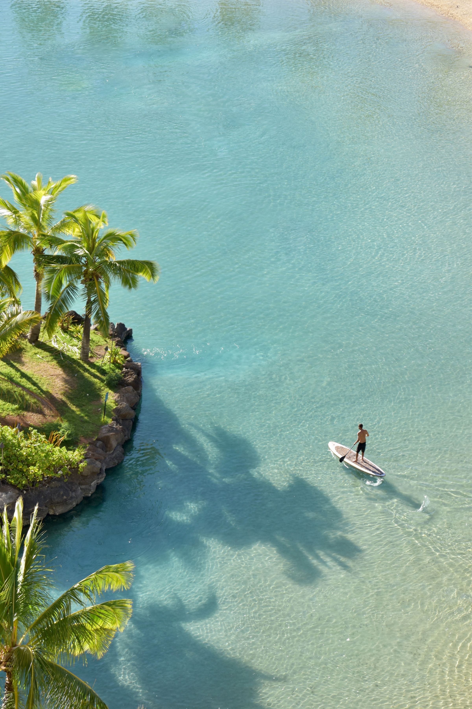

Surf · Paddle
Chase waves,
not schedules.
Surf when it’s on. Paddle when it’s calm. Come back to your own boat.
Use Gypsy Laut as your private base for days shaped around the water and the conditions.
Start a Conversation
Lembongan Penida Indonesia

No Fixed Schedule
Let the water make the plan.
Some mornings the waves make the decision for you. Other days the water settles and a paddle makes more sense.
You do not need to force either one. Start aboard, look at the conditions and shape the day from there.
Surf
When it’s on, go.
Surfboards are aboard, so when the conditions line up you have the freedom to make surfing part of the day.
A local surf guide can be arranged when you want local knowledge alongside the experience.
Where you go and how the day unfolds depends on conditions, timing and what makes sense on the water.


Paddle
When it goes quiet, slow down.
Not every good day needs waves.
Paddle when the water settles, stay closer to the boat or use the board simply to explore at your own pace.
Some of the best time on the water is the time with nowhere specific to get to.

The Rhythm
Different conditions. Same base.
When it’s on
Surf.When it’s calm
Paddle.Come back to Gypsy Laut when you’re done.
Get Closer
The boat stays the base.
Gypsy Laut is the base. The tender gets you closer.
The tenders give you flexibility between the main vessel, shore and the water, while Gypsy Laut stays your private place to return to.
The main tender is a 5.2m aluminium centre-console with a 90hp Suzuki. A 3m aluminium dinghy with a 15hp outboard is also aboard.

Back Aboard
Leave the salt outside. Keep the day going.
Come back aboard, rinse off, eat, relax or decide whether you want another session later.
Some days the water takes over. Other days surfing or paddling is only one small part of the day.
Either way, you come back to your own space.

Aboard
Ready when the day is.
- Aboard.
- SURFBOARDS
- Aboard.
- PADDLE BOARDS
- Access between vessel, shore and water.
- 2 TENDERS
- Can be arranged when wanted.
- LOCAL GUIDE
- Stay connected aboard.
- STARLINK
- Food can be prepared aboard.
- FULL KITCHEN + BBQ
Start a Conversation
What does a good day on the water look like to you?
Tell us what you have in mind and we’ll help shape the day around the conditions, the water and how you want to spend your time.
Start a Conversation